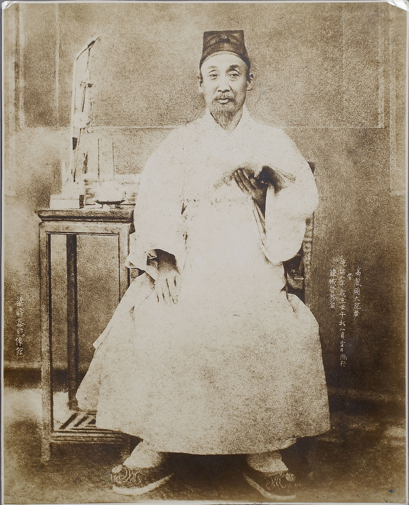

조선 26대 왕 고종의 친아버지예요. 어린 아들이 왕이 되자 약 10년간(1863~1873) 실권을 잡고 나라를 다스렸죠. 안으로는 무너진 왕실의 권위를 세우려 서원을 대거 정리하고, 비변사를 없애 왕권을 강화했어요.
밖으로는 서양과의 통상을 거부하는 <b>쇄국</b> 정책을 폈어요. 병인양요·신미양요로 서양 함대와 충돌했고, 전국에 척화비를 세웠지요. 또 왕실 위엄을 위해 경복궁을 다시 지었는데(중건), 그 막대한 비용이 백성을 힘들게 하기도 했어요.
고종이 친정을 시작하고 며느리 명성황후 세력이 커지자 권력에서 밀려났어요. 이후 임오군란·갑오개혁 때 다시 전면에 나서기도 했지요. 강한 개혁가였는지, 시대를 거스른 쇄국론자였는지 — 그의 평가가 갈리는 만큼 '위기의 조선'은 복잡했어요.